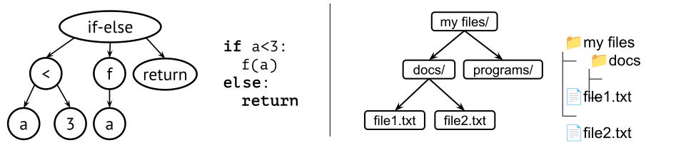

9 Trees and heaps
Tree structures let us organise data hierarchically. So far, we have mainly studied data structures that organise elements in a linear sequence, such as arrays, linked lists, stacks, and queues. In those structures, each element is followed by at most one next element. Trees take a different approach: instead of continuing in a sequence, a node can lead to two or more children. This lets us represent hierarchical relationships, and it also helps when we want fast access to values that are important in some way.
Trees appear in many settings. We can use them to represent mathematical expressions and the syntax of computer programs. We can use them to model file systems, where folders contain files and other folders. Trees can also be used as data structures, such as heaps, for implementing priority queues (Section 9.4), and search trees, for implementing sets and maps (Chapter 10).
This chapter begins with the basic ideas and terminology for trees. We then discuss binary trees (Section 9.1), how to represent trees in general (Section 9.2), and show an example of a simple data structure for disjoint sets (Section 9.3). After that we turn to heaps for priority queues (Section 9.4), including binary heaps (Section 9.5), and other meldable heaps (Section 9.6).
Tree terminology
A tree consists of nodes connected by parent-child relationships. The topmost node is the root. If a node is directly below another node, then it is a child of that node, and the node above it is its parent. In Figure 9.1, A is the root, and B and C are children of A.
Every node in a tree is also the root of a subtree. For example, B is a child of A, but it is also the root of the subtree containing B, D, and E. So, depending on context, a node name can refer either to the node itself or to the subtree rooted at that node. Two simple rules define the shape of a tree:
- Every node except the root has exactly one parent.
- There are no cycles, so a node cannot be its own ancestor.
Together, these rules give us a hierarchical structure with a unique path from the root to every other node. Some common tree terms are:
- A tree is empty if it has no nodes.
- A leaf node is a node with no children.
- An internal node is a node with at least one child.
- A branch usually means an internal node, especially one with several children.
- A forest is a collection of trees.
- An ancestor of a node is any node on the path from the root to that node.
- A descendant of a node is any node in the subtree rooted at that node.
- Siblings are nodes with the same parent.
- A path is a sequence of nodes where each node is the parent of the next one.
We will sometimes describe trees and nodes using the concepts of size, level, and height. The size of a tree is the number of nodes it contains. The level of a node is its distance from the root. Thus, the root is at level 0, its children are at level 1, and so on. The depth of a node is synonymous with its level. The height of a tree (or subtree) is the number of edges on the longest path from its root to a leaf. Consequently, a tree consisting of a single node has height 0. We define the height of an empty tree to be -1.
Another important question is whether the children of a node have a fixed order. In a file system, the order of the children of a folder is usually unimportant. In a syntax tree, order matters, because the expressions a < 3 and 3 < a mean different things. This distinction will matter later when we compare general trees, binary trees, and heaps.

Figure 9.2 shows two typical
examples. In a syntax tree, each node represents a language construct
such as a function call or an if-statement, and the
children are its components. In a file system tree, the nodes are files
and folders, and the parent of a node is the folder that contains
it.
Trees contain data in nodes, but the meaning of the data and the meaning of the parent-child relationship depend on the application. So there is no single tree data structure in the same way that there is a single stack or queue abstraction. Instead, trees form a family of related structures.
Why heaps belong here
A priority queue stores elements together with priorities, so that we can always access or remove the highest-priority element first. A heap is a tree-based way to implement such a priority queue efficiently.
The key idea is that the most important element is kept at the root. This does not mean that the entire structure is sorted. Instead, heaps maintain a local ordering rule between parents and children. That rule is strong enough to keep the highest-priority element at the root, while still allowing updates to be efficient.